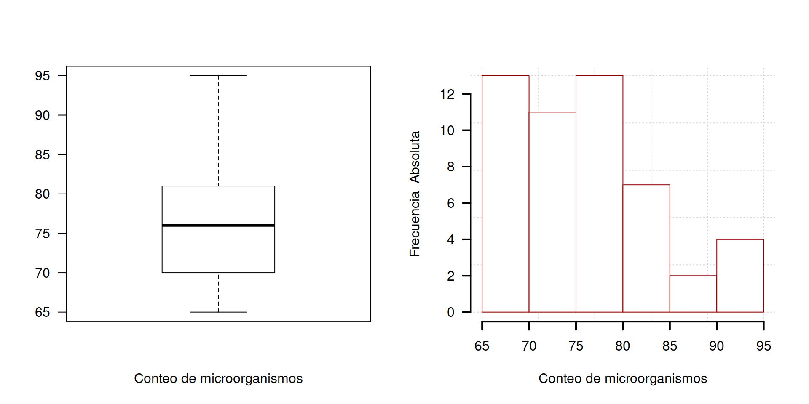
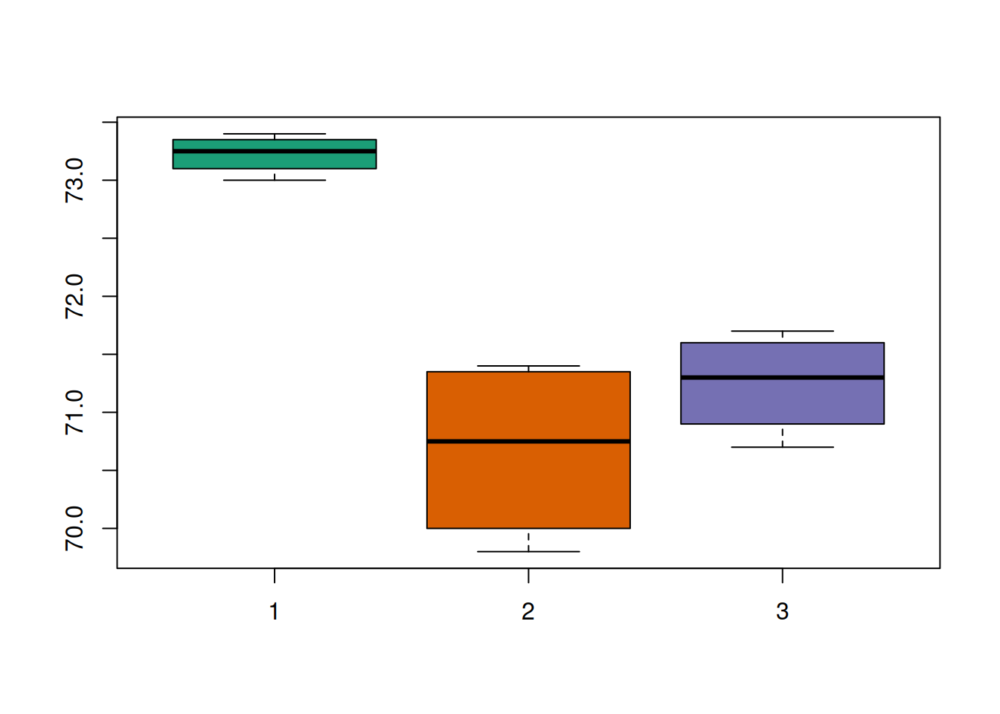
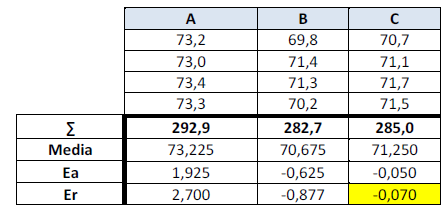
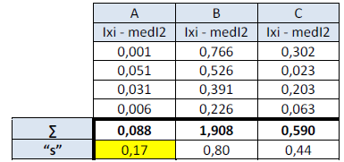

En un estudio de \(50\) cultivos se obtuvieron los siguientes resultados en el recuento de microorganismos
78, 77, 69, 80, 85, 69, 78, 77, 76, 69, 65, 66, 78, 69, 90, 81, 82, 75, 72, 73, 71, 68, 67, 69, 68, 78, 79, 72, 73, 92, 91, 84, 86, 82, 74, 72, 73, 95, 76, 69, 78, 77, 95, 68, 73, 72, 85, 81, 80, 70
su media, desviación estandar y mediana tienen un valor de :
cultivos<-c(78, 77, 69, 80, 85, 69, 78, 77, 76, 69, 65, 66, 78, 69, 90, 81, 82, 75, 72, 73, 71, 68, 67, 69, 68, 78, 79, 72, 73, 92, 91, 84, 86, 82, 74, 72, 73, 95, 76, 69, 78, 77, 95, 68, 73, 72, 85, 81, 80, 70)
mean(cultivos) # media[1] 76.54sd(cultivos) # desviación estandar[1] 7.627046median(cultivos) # mediana[1] 76Ayuda el poder visualizar los datos mediante gráficos que permitan entender el valor de los indicadores obtenidos
nf <- layout( matrix(c(2,1), nrow=1) )
hist(cultivos,xlab="Conteo de microorganismos",ylab="Frecuencia Absoluta", las=1, panel.first=grid(),col="white",border="red4",lwd=2,main="")
boxplot(cultivos , xlab="Conteo de microorganismos" , col="white", las=1)
Ustedes saben que el calcio (Ca2+) es un catión con capacidad multifuncional como segundo mensajero en diferentes grupos celulares del sistema inmunitario que incluyen los linfocitos T y B, los macrófagos, los mastocitos, entre otras. En un laboratorio, se calculó el contenido en Ca2+ en una muestra de \(200\) ml de agua, obteniendo los siguientes resultados, expresados en g de Ca por cada \(100\) ml de agua.
0.04045, 0.04040, 0.04038, 0.04042, 0.04035, 0.04042, 0.04044, 0.04045, 0.04038, 0.04039
ca<-c(0.04045, 0.04040, 0.04038, 0.04042, 0.04035, 0.04042, 0.04044, 0.04045, 0.04038, 0.04039)
cat("media : ",mean(ca), "\n")media : 0.040408 cat("moda : ",mode(ca),"\n")moda : 0.04038 cat("mediana : ",median(ca),"\n")mediana : 0.04041 cat("desviación estandar :",sd(ca),"\n")desviación estandar : 3.359894e-05 En un análisis de calcio, se realizó por tres métodos distintos. Los resultados se prsentan a continuación. ¿Qué método fue más preciso? ¿Qué método fue más exacto?
Lab_A=c(73.2, 73.0, 73.4, 73.3)
Lab_B=c(69.8, 71.4, 71.3, 70.2)
Lab_C=c(70.7, 71.1, 71.7, 71.5)
datos=data.frame(Lab_A,Lab_B,Lab_C)
datos Lab_A Lab_B Lab_C
1 73.2 69.8 70.7
2 73.0 71.4 71.1
3 73.4 71.3 71.7
4 73.3 70.2 71.5 Lab_A Lab_B Lab_C
Min. :73.00 Min. :69.80 Min. :70.70
1st Qu.:73.15 1st Qu.:70.10 1st Qu.:71.00
Median :73.25 Median :70.75 Median :71.30
Mean :73.22 Mean :70.67 Mean :71.25
3rd Qu.:73.33 3rd Qu.:71.33 3rd Qu.:71.55
Max. :73.40 Max. :71.40 Max. :71.70 
Warning in mean.default(x, na.rm = na.rm): argument is not numeric or logical:
returning NA[1] NAWarning in mean.default(x, na.rm = na.rm): argument is not numeric or logical:
returning NA[1] NAWarning in mean.default(x, na.rm = na.rm): argument is not numeric or logical:
returning NA[1] NA
El método más exacto es el C puesto que tiene un menor error absoluto.

El valor más pequeño de “s” indica una mayor precisión, en este caso el método A.
# Gracias!